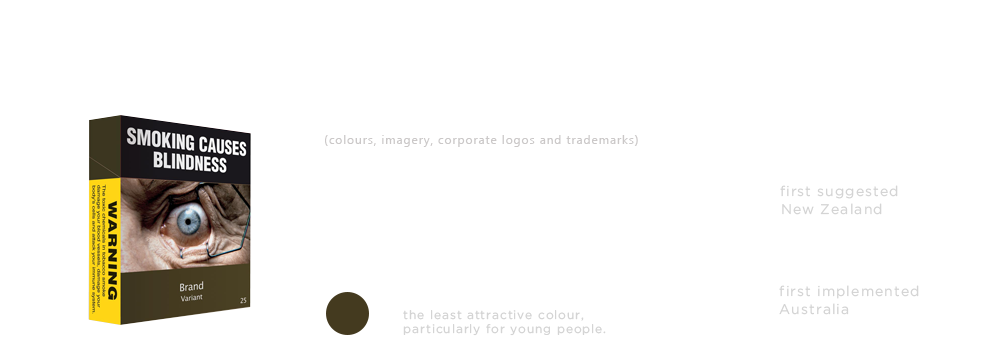
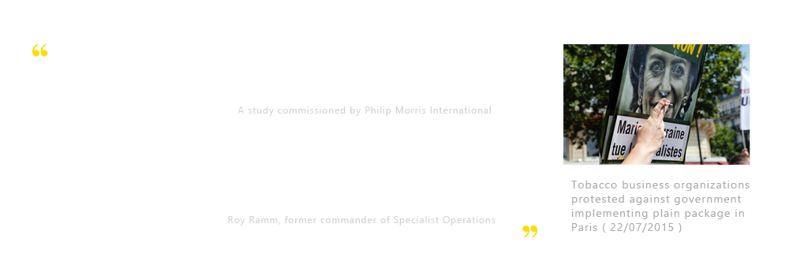

Graphic warning labels pair gruesome images with warnings about the dangers of smoking, covering anywhere from 30 to 80 percent of cigarette pack “faces” (the front and back). The goals of such labels are informing consumers about the risks of smoking, encouraging quitting among smokers, and preventing others from ever starting.
Source

The worldwide trend for larger, pictorial health warnings is growing and unstoppable, with many more countries in the process of developing such requirements. There is also enormous international momentum for implementation of plain packaging.
Source
In total 94 countries/jurisdictions have required warnings to cover at least 50% of the package front and back (on average), up from 60 in 2014 and 24 in 2008. There are now 43 countries/jurisdictions with a size of at least 65% (on average) of the package front and back.
Source


